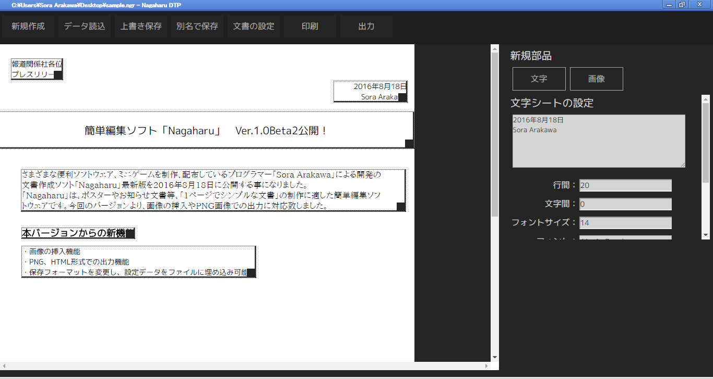
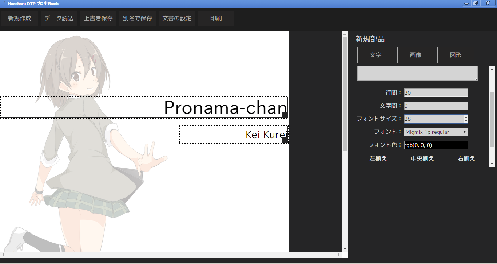
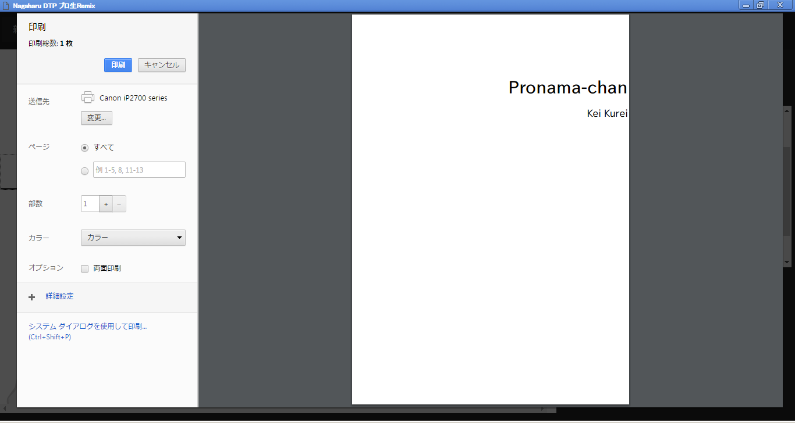
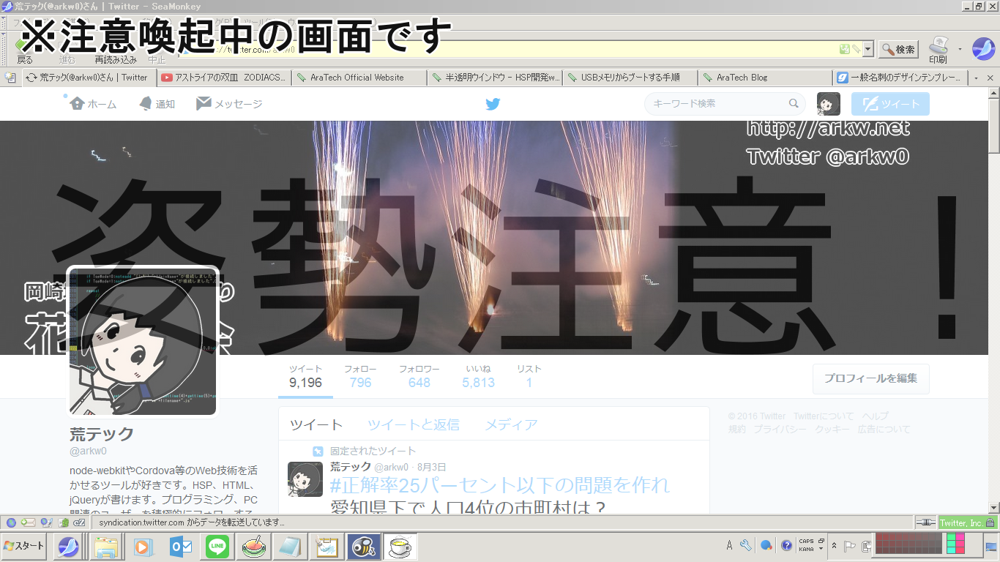

AraTech - Official
実用ソフトウェア
Windows用ソフト
Nagaharu
オープンソース
Nagaharu プロ生Remix
姿勢チェッカー for Windows
Nagaharu

オープンソースの簡単編集ソフトウェアです。
ビジネス文書からポスターまで、オールマイティーかつシンプルに使えます。
公式サイトを見る
Nagaharu プロ生Remix
 
Nagaharuの派生品です。背景にプロ生ちゃんが表示されます。これでビジネス文書作成も捗るかも...
一部機能を削ぎ落とし、より使いやすくなりました。 ※プロ生ちゃんは印刷には写りません。ご安心下さい。
ダウンロード (53MB)
姿勢チェッカー for Windows

パソコン作業中に姿勢が悪くならないよう、一定時間毎に注意喚起するソフトです。
HSPプログラムコンテスト2016応募作品。
Ver.1.0：
ダウンロード (157KB)
(c)2015-2016 Sora Arakawa. all rights reserved.